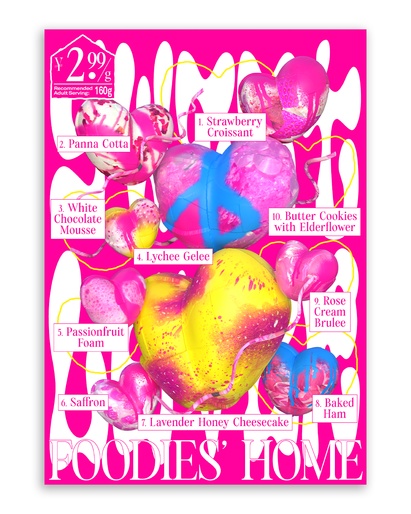
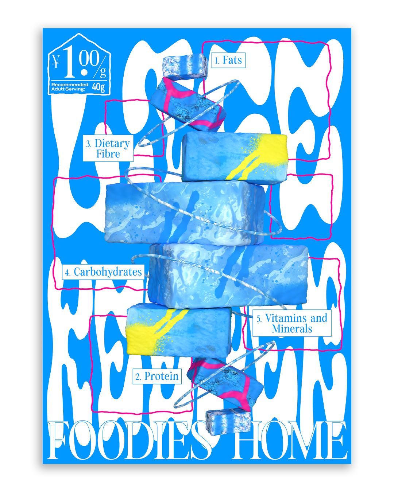
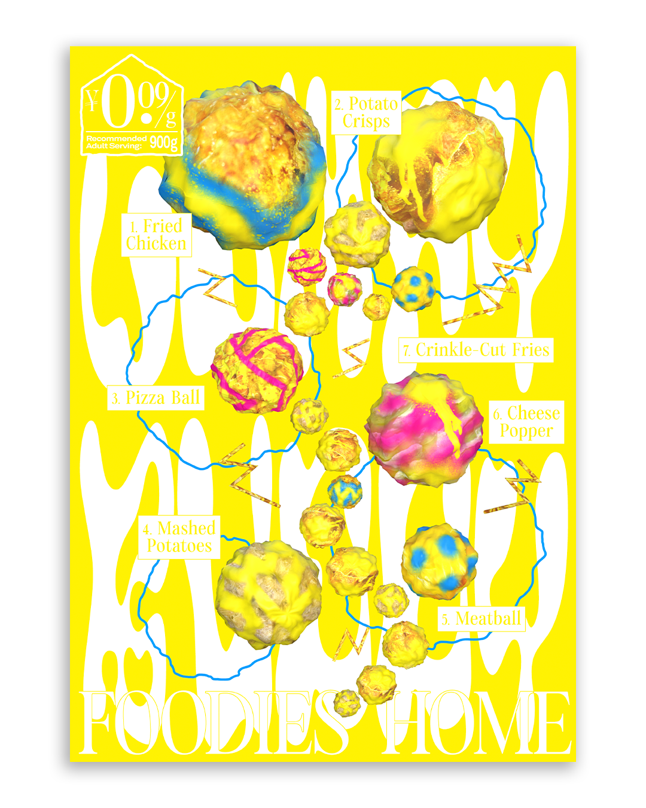
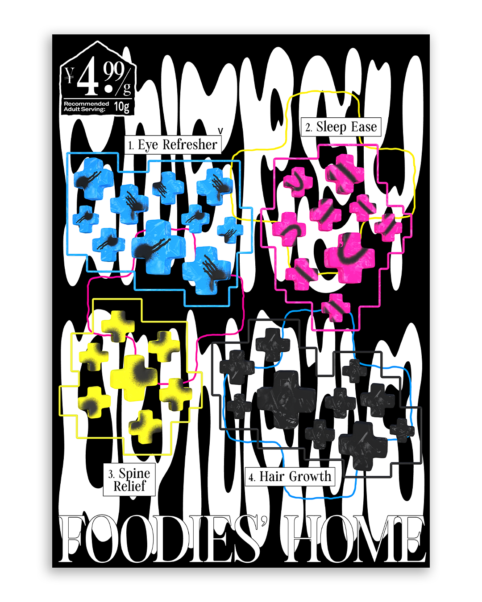

Foodies' Home
A speculative design project envisioning "Foodies' Home," a fictional community service company that uses 3D food printing to reimagine dietary support for young migrant workers in Shanghai. Presented as a series of posters, the work sits between practical proposal and critical reflection on labor, alienation, and the value of everyday care under capitalism.



